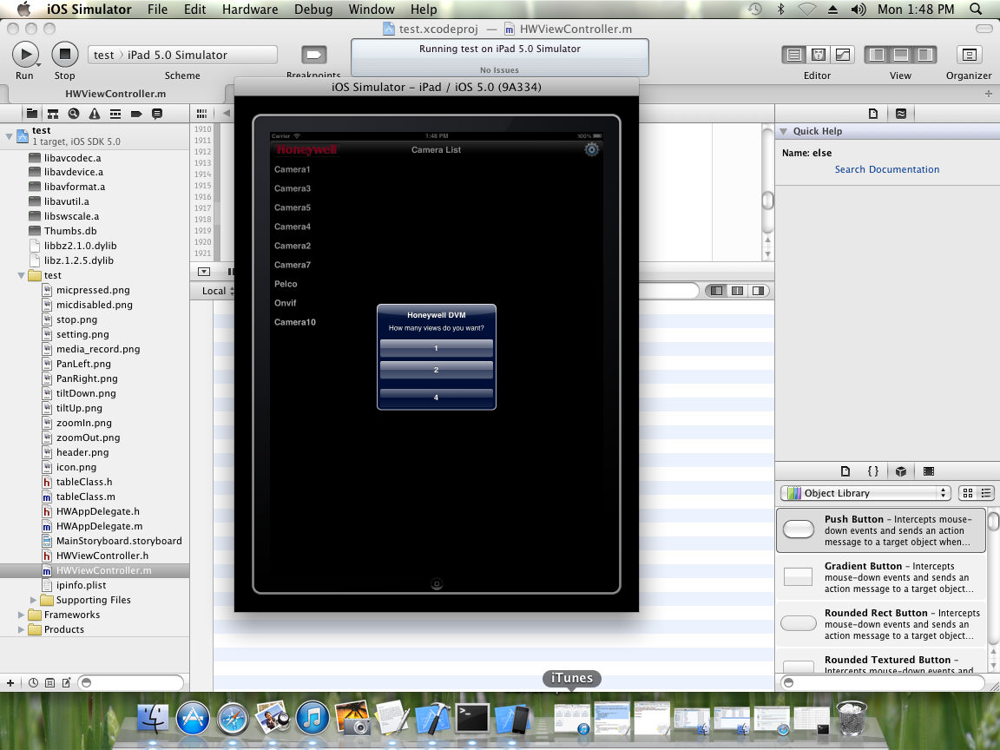
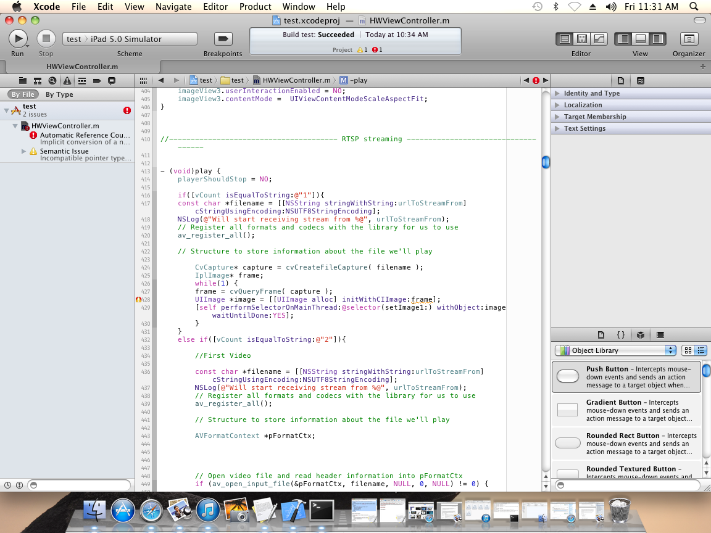
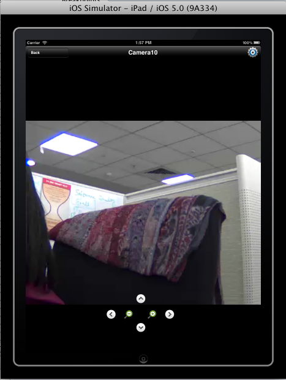
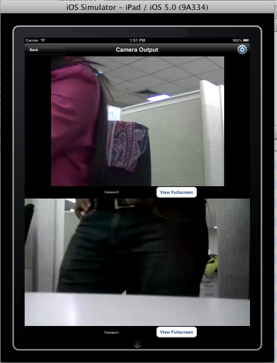
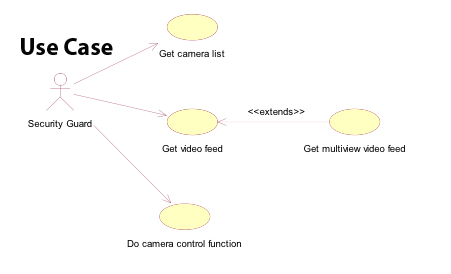

Developed as a part of internship in Honeywell Technology labs in a team of two with Alok Mishra.





Problem:
To develop an IOS app to support secure streaming of live video feed from security cameras as well as camera control operations like pan,tilt,zoom, video recording and retrieving, two way audio control.
Process:
Started with understanding design and usability requirements gathered by product design team at the company.
Created light weight front end for iPad that allows user to authenticate, set up and select from multiple camera feed.
Designed the functionality to display up to four camera feed at a time.
Added pan,tilt, zoom functionality.
Developed an intermediate web service to enable to enable the communication between the front and the back end server which had camera configured to it.
Setup an RTSP server to enable real time streaming of the video and log the events occurring in the front end for further study and analysis.